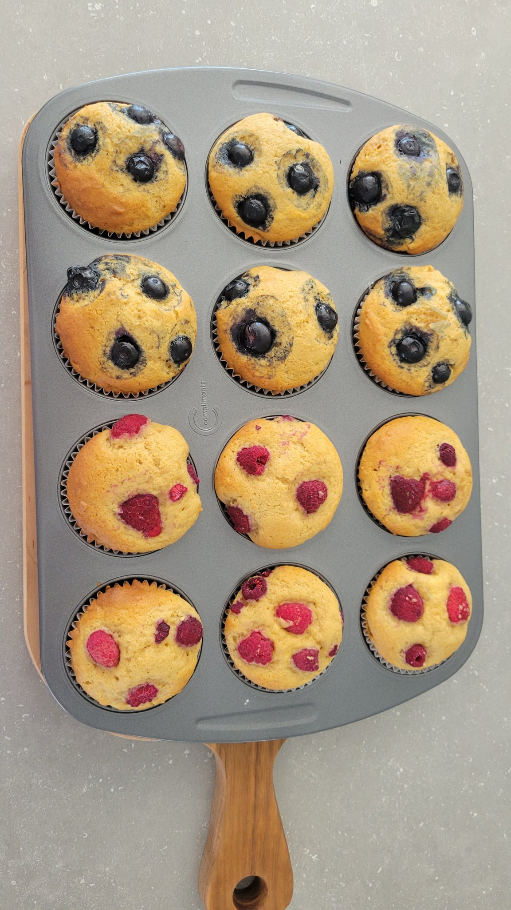

Muffin

Cannot go wrong! Basic Muffin that I make every week for my family. Not too sweet, just PERFECT!
Easy to make with simple ingredients. You can vary it with different fruits and jams!
Ingredients
- Salted Butter 100g
- Sugar 160g
- Eggs 2
- Flour 240g
- Baking Powder 2 teaspoon
- Milk 100cc
- Vanilla Essence 6 drops
Steps
- Preheat oven to 180C or 356F.
- Put the butter in a bowl and knead it until it will be creamy.
- Put sugar into it and mix it well enough to let air in.
- In another bowl, beat 2 eggs and mix well.
- Put mixed eggs into step3 separating 2 to 3 times and mix well every time.
- Put milk and vanilla essence into it and mix them.
- Put flour and baking powder into it and mix them. *Don't mix it too much, the batter hardens.
- Fill muffin cases two-thirds full and bake it for 20 to 25 minutes.